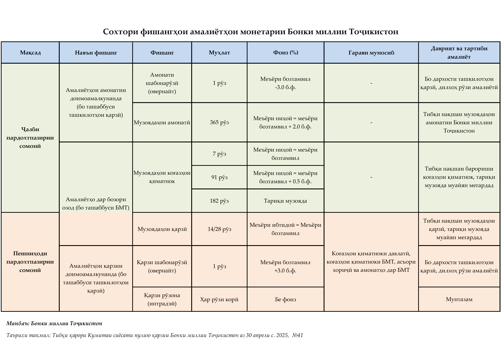

Бонки миллии Тоҷикистон барои иҷрои вазифа ва мақсади худ дар соҳаи сиёсати пулию қарзӣ фишангҳои (воситаҳои) зеринро истифода мебарад:
Тибқи Қонуни Ҷумҳурии Тоҷикистон "Дар бораи Бонки миллии Тоҷикистон" меъёри бозтамвил меъёри ҳадди ақалли фоизест, ки аз рӯйи он Бонки миллии Тоҷикистон ба ташкилотҳои қарзӣ қарз медиҳад ё меъёри даромадест, ки тибқи он Бонки миллии Тоҷикистон ба ташкилотҳои қарзии исломӣ қарз медиҳад.
Ҳамзамон, меъёри бозтамвил фишанги асосии сиёсати пулию қарзӣ барои анҷом додани амалиётҳои монетарӣ маҳсуб ёфта, дар асоси таҳлилҳои ҳамаҷонибаи нишондиҳандаҳои мақсаднок, хавфҳои эҳтимолии дохилию берунӣ ва мавқеи сиёсати пулию қарзӣ муқаррар карда мешавад.
Меъёри бозтамвил нақши иттилоотӣ ва ишоратиро (сигналиро) доро буда, самт ва мавқеи сиёсати пулию қарзиро барои давраи оянда (миёнамуҳлат ё дарозмуддат) тавсиф менамояд.
Вобаста ба тағйирёбии меъёри бозтамвил мавқеи сиёсати пулию қарзӣ барои давраи оянда муайян карда мешавад. Дар адабиётҳои иқтисодӣ ҳолати мувозинии меъёри бозтамвилро меъёри фоизи нейтралӣ меноманд.
Баробар будани меъёри бозтамвил ба меъёри нейтралӣ (мувозинӣ) аз мавҷудияти тавозуни сатҳи талаботу таклифот, рушди устувори иқтисодӣ ва муътадилии сатҳи таваррум дар доираи ҳадафи муқарраршудаи он гувоҳӣ медиҳад.
Агар меъёри бозтамвил аз сатҳи нейтралии худ баланд (паст) бошад, аз қатъӣ будани ҳавасмандии мавқеи сиёсати пулию қарзӣ дарак медиҳад.
Амалиёт дар бозори озод яке аз фишанги фаъол ва самараноки сиёсати пулию қарзӣ ба ҳисоб рафта, ҷалби пардохтпазирӣ (маблағҳои озоди пулӣ дар суратҳисобҳои ташкилоти қарзӣ дар Бонки миллии Тоҷикистон) ё пешниҳоди пардохтпазириро ба низоми бонкӣ тавассути баргузор намудани музоядаҳо дар бар мегирад. Хусусияти муҳимми фишанги мазкур дар он аст, ки ба Бонки миллии Тоҷикистон имкон медиҳад дар раванди таъсиррасонӣ ба вазъи пардохтпазирӣ ва фоизҳои кӯтоҳмуддати бозор ташаббус дошта бошад.
Амалиёти Бонки миллии Тоҷикистон дар бозори озод, дар умум, тибқи таҷрибаи муосири байналмилалӣ ба ду гурӯҳ ҷудо мешавад:
Барориши коғазҳои қиматнок яке аз фишангҳои асосӣ ва ғайримустақими сиёсати пулию қарзӣ ба ҳисоб рафта, ба Бонки миллии Тоҷикистон имкон медиҳад, ки тариқи барпо намудани музоядаҳои коғазҳои қиматнок пардохтпазирии барзиёди низоми бонкиро ҷалб ва ҳаҷми пулро ба танзим дарорад. Музоядаҳои коғазҳои қиматноки Бонки миллии Тоҷикистон тибқи нақша мунтазам тавассути низоми электронии савдо дар реҷаи вақти воқеӣ (online) баргузор карда мешаванд. Меъёри фоизӣ барои дархостҳои ташкилотҳои қарзӣ аз ҷониби Кумитаи сиёсати пулию қарзии Бонки миллии Тоҷикистон муқаррар карда мешавад. Заминаи меъёрии ҳуқуқӣ, тартиб ва шартҳои анҷом додани амалиёти зикргардидаро Дастурамали №189 ба танзим медарорад.
Музоядаи қарзӣ пешниҳоди қарзҳои кӯтоҳмуҳлат мебошад, ки ташкилотҳои қарзӣ барои дастрасӣ ба пардохтпазирии кӯтоҳмуддат аз Бонки миллии Тоҷикистон дархост менамоянд. Музоядаҳои қарзии Бонки миллии Тоҷикистон тибқи нақша гузаронида мешаванд. Меъёри фоизӣ барои дархостҳои ташкилотҳои қарзӣ аз ҷониби Кумитаи сиёсати пулию қарзии Бонки миллии Тоҷикистон муқаррар карда мешавад. Заминаи меъёрии ҳуқуқӣ, тартиб ва шартҳои баргузор намудани музоядаи қарзиро Дастурамали №220 ба танзим медарорад.
Фишангҳои доимоамалкунандаи шабонарӯзӣ (овернайт) тавассути ҷалб ё пешниҳоди пардохтпазирӣ ба муҳлати як шабонарӯз ҷиҳати батанзимдарории меъёрҳои фоизи шабонарӯзии бозори байнибонкӣ, вусъатдиҳии бозори пул, таъмини самаранокии сиёсати пулию қарзӣ, инчунин барои мусоидат ба фаъолияти самаранок ва мунтазами низоми пардохтҳо аз ҷониби Бонки миллии Тоҷикистон истифода мегарданд.
Бонки миллии Тоҷикистон якчанд фишанги доимоамалкунандаи шабонарӯзиро (овернайт) ба ташкилотҳои қарзӣ пешниҳод менамояд:
Қарзе, ки ба ташкилоти қарзӣ таҳти гарав бо меъёри фоизии муқарраргардида дар давоми рӯзи амалиётӣ бо шарти на дертар аз рӯзи ояндаи корӣ пардохт кардани он пешниҳод мегардад. Меъёри фоизӣ барои дархостҳои ташкилотҳои қарзӣ аз ҷониби Кумитаи сиёсати пулию қарзии Бонки миллии Тоҷикистон муқаррар карда мешавад. Заминаи меъёрии ҳуқуқӣ, тартиб ва шартҳои анҷом додани амалиёти қарзии зикргардидаро Дастурамали №220 ба танзим медарорад.
Қарзе, ки ба ташкилоти қарзӣ таҳти гарав дар давоми рӯзи амалиётӣ бо шарти пардохт кардани он дар охири рӯзи корӣ пешниҳод мегардад. Заминаи меъёрии ҳуқуқӣ, тартиб ва шартҳои анҷом додани амалиёти қарзии зикргардидаро Дастурамали №220 ба танзим медарорад.
Амонати шабонарӯзӣ (овернайт) амалиёти кӯтоҳмуҳлати амонатие мебошад, ки тибқи он маблағ бо пули миллӣ аз ҷониби ташкилоти қарзӣ бо шарти бозгардонии он дар рӯзи ояндаи корӣ ба Бонки миллии Тоҷикистон гузаронида мешавад. Меъёри фоизӣ барои дархостҳои ташкилотҳои қарзӣ аз ҷониби Кумитаи сиёсати пулию қарзии Бонки миллии Тоҷикистон муқаррар карда мешавад. Заминаи меъёрии ҳуқуқӣ, тартиб ва шартҳои анҷом додани амалиёти зикргардидаро Дастурамали №226 ба танзим медарорад.
Музоядае, ки Бонки миллии Тоҷикистон маблағҳои ташкилотҳои қарзиро бо пули миллӣ бо шарти бозгардонӣ, пардохти фоиз ва муҳлатнокӣ қабул менамояд. Музоядаҳои амонатии Бонки миллии Тоҷикистон тибқи нақша гузаронида мешавад. Меъёри фоизӣ барои дархостҳои ташкилотҳои қарзӣ аз ҷониби Кумитаи сиёсати пулию қарзии Бонки миллии Тоҷикистон муқаррар карда мешавад. Заминаи меъёрии ҳуқуқӣ, тартиб ва шартҳои анҷом додани амалиёти зикргардидаро Дастурамали №226 ба танзим медарорад.
Захираҳои ҳатмӣ яке аз фишангҳои татбиқи сиёсати пулию қарзии Бонки миллии Тоҷикистон ба ҳисоб рафта, механизми танзими пардохтпазирии умумии низоми бонкиро ифода мекунанд.
Ташкилотҳои қарзӣ иҷрои талаботи захираҳои ҳатмӣ бо пули миллиро бо роҳи нигоҳ доштани маблағ дар суратҳисоби муросилотии Бонки миллии Тоҷикистон тибқи тақвими захираҳои ҳатмӣ таъмин менамоянд.
Ташкилоти қарзӣ захираҳои ҳатмӣ бо асъори хориҷиро бо роҳи интиқоли маблағ ба суратҳисоби дахлдор, ки дар Бонки миллии Тоҷикистон бо ҳамин мақсад кушода шудааст, ташкил медиҳад.
Амалиёт бо асъори хориҷӣ — харид ё фурӯши асъори хориҷиро дар бозорҳои асъор дар бар мегирад. Амалиётҳо дар бозори асъори хориҷӣ дар доираи сиёсати қурбии Бонки миллии Тоҷикистон ба роҳ монда мешаванд ва дар маҷмуъ ду мақсади асосӣ доранд:
Муътадил намудани лаппиши аз эътидол зиёди қурби сомонӣ нисбат ба асъори хориҷӣ дар бозори дохилии асъор.
Зиёд намудани захираҳои байналмилалӣ ва расонидани сатҳи онҳо ба талаботи меъёрҳои байналмилалии устувории захираҳои байналмилалӣ.
Амалиёт дар бозори байнибонкии асъор бо роҳи гузаронидани музоядаҳои асъори хориҷӣ, қарордодҳои спот, амалиёти своп/форвард тариқи низоми электронии савдо анҷом дода мешавад.
